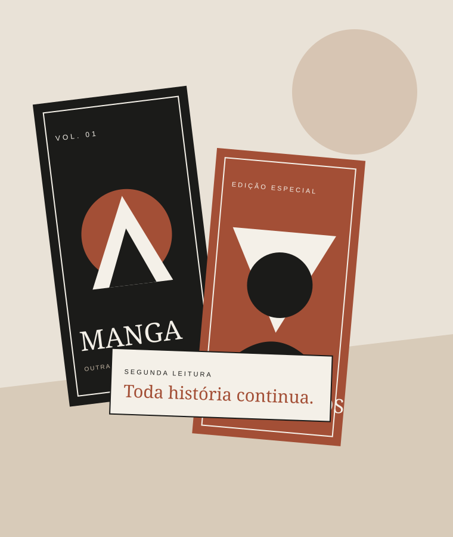

Uma nova estante
Uma edição parada pode se tornar a próxima leitura favorita de alguém. Dar outra chance também é uma forma de cuidar.
Um novo capítulo começa aqui
Um espaço para quem acredita que uma boa história não termina na última página. Explore mangás e HQs de segunda mão, descubra novas leituras e encontre aquele volume que faltava na sua coleção.
Nosso catálogo valoriza a circulação de livros, o cuidado com cada edição e o prazer de compartilhar universos — sem precisar começar sempre do zero.
Explorar catálogo ↗
Edições que seguem contando histórias · Nº 001
Nossa ideia, em três pontos
Uma edição parada pode se tornar a próxima leitura favorita de alguém. Dar outra chance também é uma forma de cuidar.
Informamos conservação, edição e preço para que você saiba o que está levando antes de fechar negócio.
De aventuras épicas a dramas cotidianos, queremos aproximar leitores e colecionadores de novas descobertas.
“Uma história não perde seu valor só porque já foi lida.”
Segunda Leitura · Manifesto